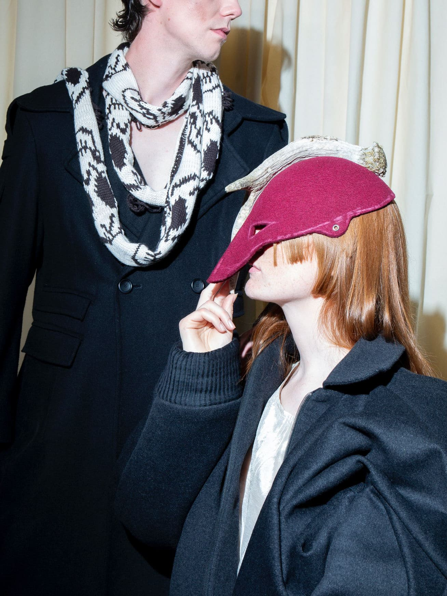
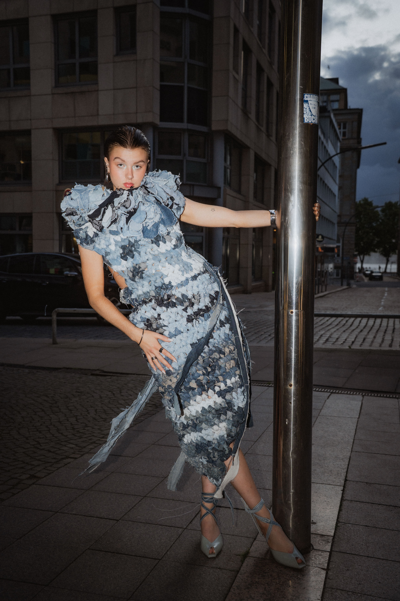
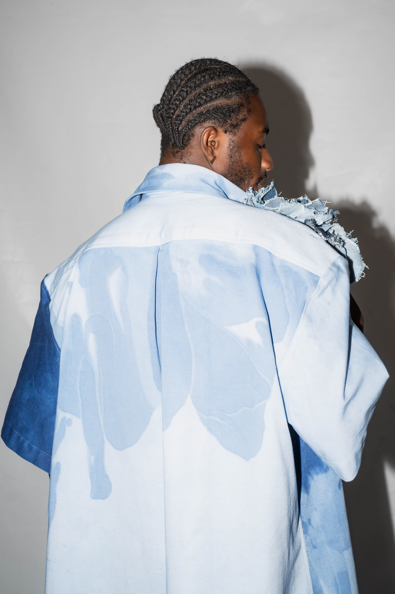
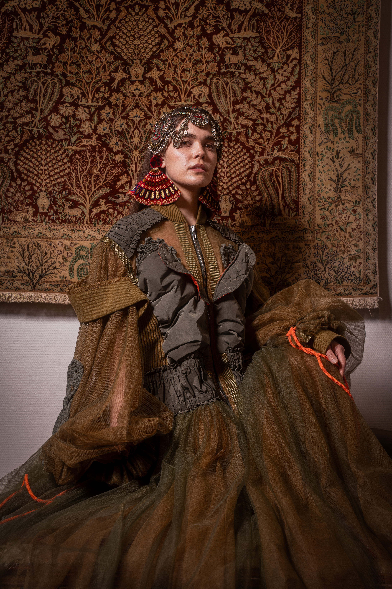
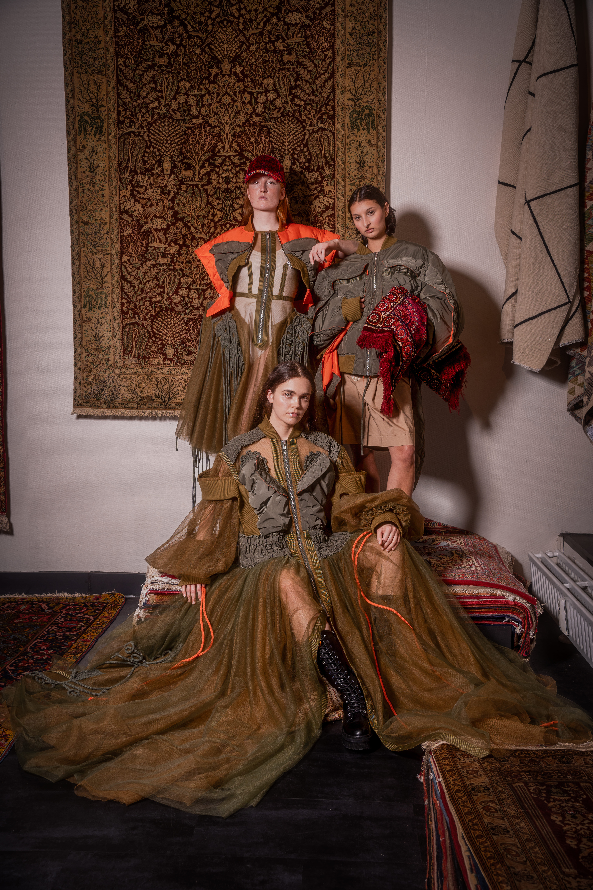
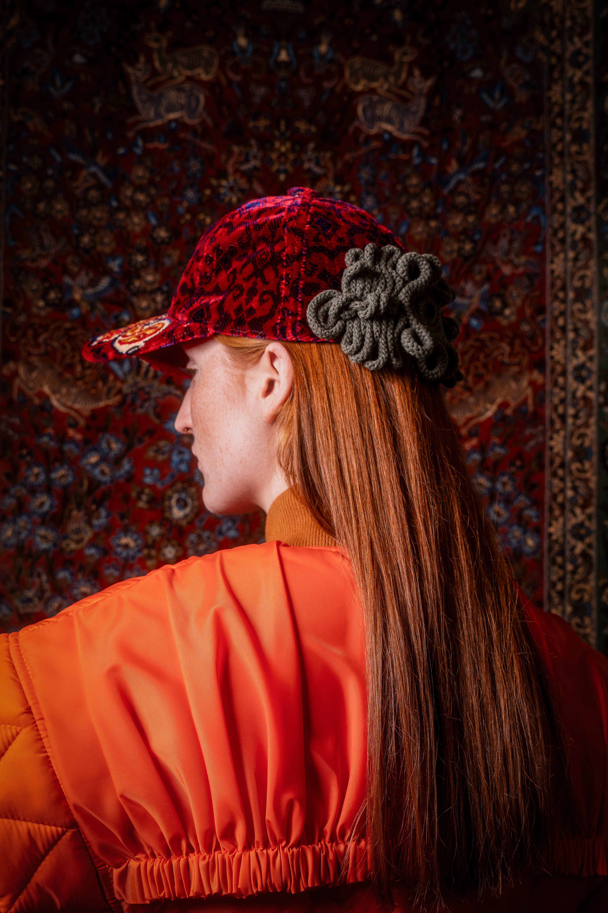

A+ MODESHOW
Covershoot — A+ Modenschau 2025 in Zusammenarbeit mit Luca Engels.





BACHELORKOLLEKTION — RONJA SCHULZ
Fotografien zur Bachelorkollektion von Ronja Schulz.



BACHELORKOLLEKTION — ALINA NAZARI
Fotografien zur Bachelorkollektion von Alina Nazari.